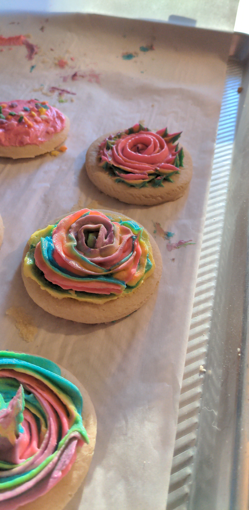
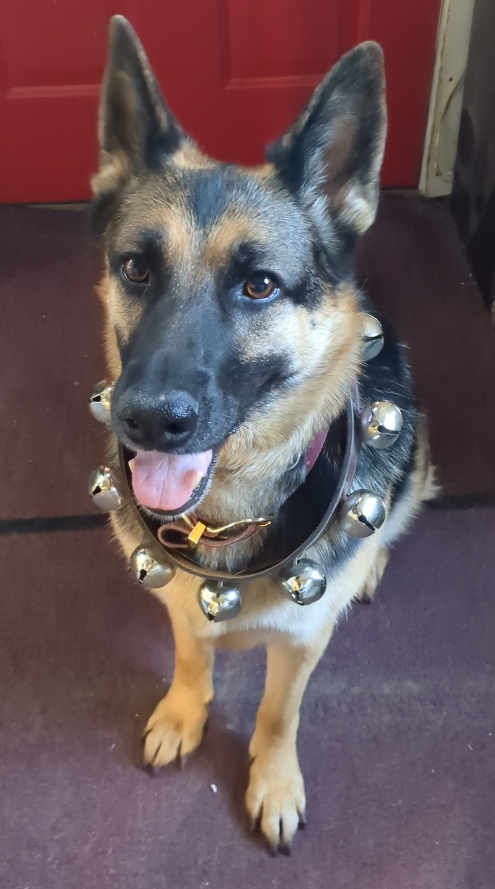

As a person who loves spicy food, Marco loves to cook items that will fuel that fire. Pictured above are some homemade bacon-wrapped jalapeños, while not the spiciest, were delicious nonetheless.

Baking is also a hobby for not only Marco, but myself too. We like to compare baked dishes each other have made, trying to out-do the other. Pictured above is some frosted sugar cookies he made for a party at a friends house.

Izzy is Marco's pride and joy. She is a 7-year-old German Shepherd he got while still in college. Izzy not only helps keep Marco company, but also encourages him to stay in shape by going on walks, runs and playing fetch daily. Pictured on the left, Izzy is getting into the holiday spirit with her collar of sleigh bells.